Profil
Tentang
Lulusan S1 Teknologi Informasi dari Universitas Telkom Surabaya (2026) dengan pengalaman magang di bidang pengembangan website dan analisis data. Terampil dalam analisis kebutuhan pengguna, perancangan UI/UX, dan pengembangan website. Terbiasa mengerjakan proyek IT di perkuliahan secara tim maupun individu. Aktif dalam organisasi, kepanitiaan, serta pelatihan. Tertarik mengembangkan karier di bidang pengembangan web dan perangkat lunak.
- Universitas
- Universitas Telkom, Surabaya
- Program studi
- S1 Teknologi Informasi
- Masa studi
- Juli 2022 – Agustus 2026
Rekam jejak
Pengalaman
Web Developer Intern
Badan Riset dan Inovasi Daerah (BRIDA) Provinsi Jawa Timur — Surabaya
September 2025 – Januari 2026
- Pencarian ide dan brainstorming dengan staff dan intern untuk merumuskan kebutuhan sistem, pengumpulan data, perancangan desain website dan membuat prototype menggunakan Figma.
- Implementasi hasil desain dan brainstorming ke dalam kode program menggunakan HTML, CSS, JavaScript, serta PHP.
- Mengelola basis data sistem secara keseluruhan dan melaksanakan migrasi kode ke hosting untuk proses deployment sistem.
- Bertanggung jawab mengumpulkan data Survei Kepuasan Masyarakat (SKM) setiap tiga bulan sekali.
- Menganalisis data dengan Python dan Excel untuk melihat tren dan pola, lalu menyusun hasilnya jadi laporan dan visualisasi di Figma.
Lihat foto
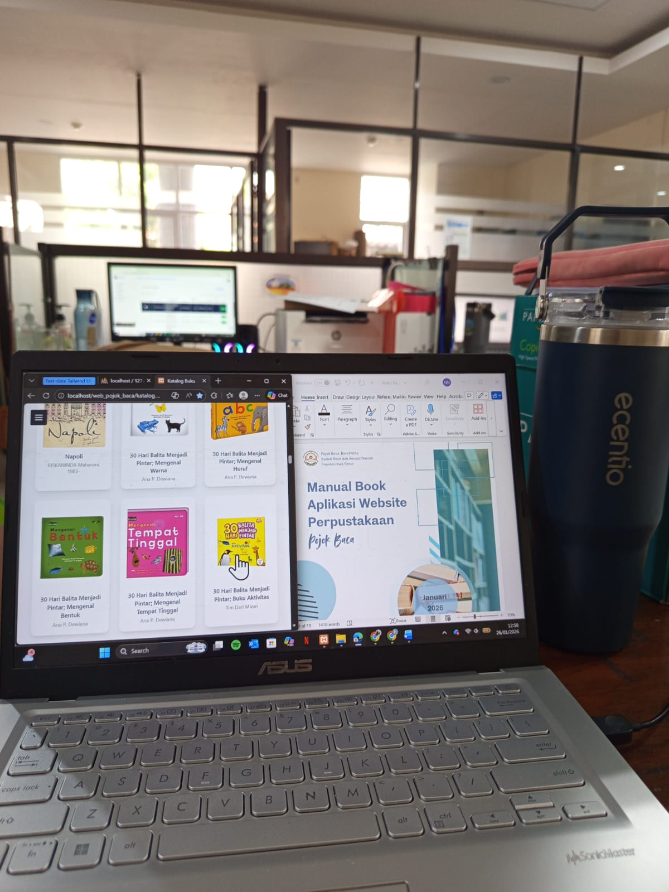
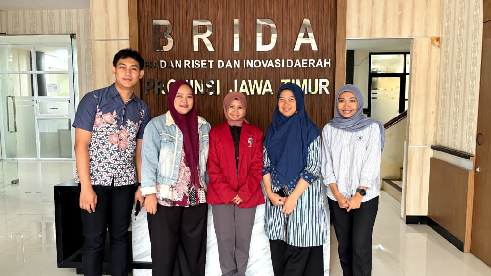
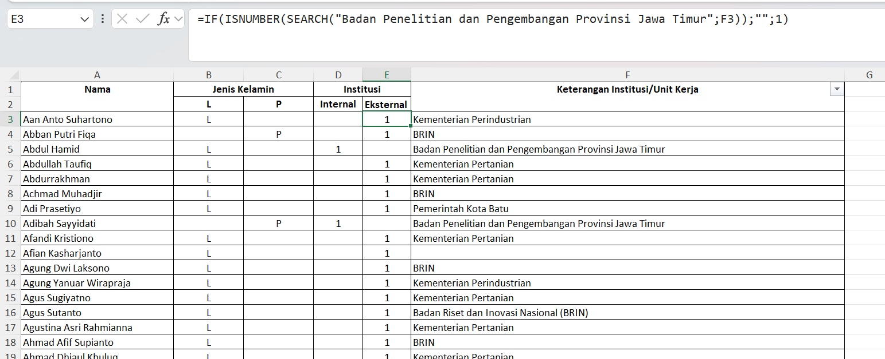
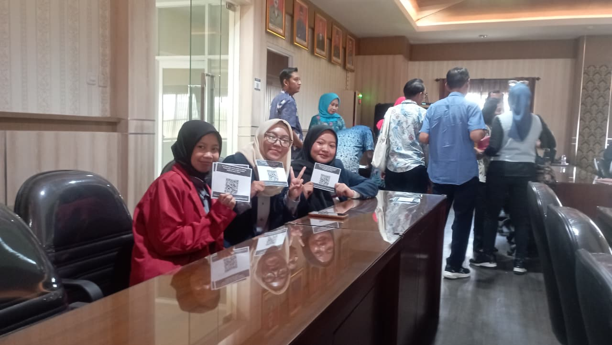
Yang dikerjakan
Proyek
Eco Surabaya
Proyek Mata Kuliah Pengalaman Pengguna · Sep – Des 2024
Prototipe edukasi lingkungan, dirancang dengan pendekatan user-centered design dan kerangka value-behavior-goals untuk memahami kebutuhan penggunanya.
Lihat foto
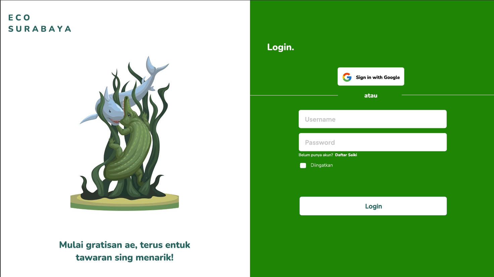
Momenku Visual
Proyek Mata Kuliah · Okt 2025 – Jan 2026
Website layanan fotografi lengkap dengan halaman login, galeri portofolio, kontak, dan dashboard admin. Saya menangani front-end serta pengelolaan databasenya.
Lihat foto
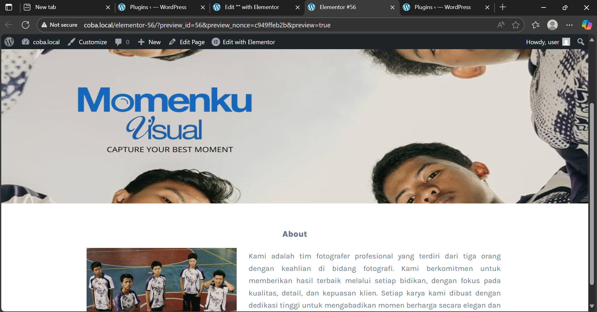
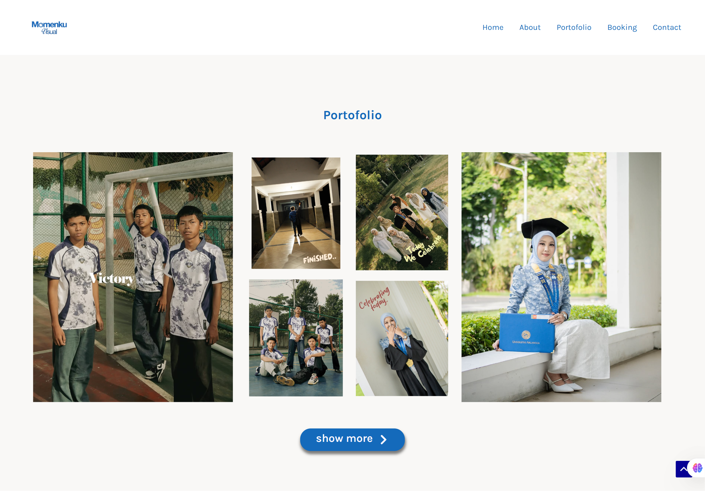
Belajar berkelanjutan
Pelatihan & Sertifikasi
Coding Camp DBS Foundation 2026 — Dicoding Indonesia
Mengikuti bootcamp Coding Camp DBS Foundation secara individu, mencakup kelas Python dan Javascript. Pembahasan materi terkait pengenalan Python, macam data, method, array, dan matriks menggunakan tools VsCode maupun Google Colaboratory. Pada kelas Javascript, materi mencakup runtime environment, struktur data (object, array, map, set), loop, dan conditional.
latihan landing page Dicoding latihan page dicodingCoding Camp DBS Foundation 2025 — Dicoding Indonesia
Mengikuti bootcamp Coding Camp DBS Foundation secara individu, mencakup kelas pemrograman web, artificial intelligence (AI), serta literasi finansial. Pembahasan materi terkait HTML, CSS, serta teknik layout responsif pada pelatihan kelas pemrograman web. Pada kelas AI, materi mencakup konsep AI, Machine Learning, dan Deep Learning, serta penerapannya.
Fundamental Course: Intro to Software Engineer — RevoU
Course online dua minggu dengan tugas latihan selama 2 minggu dan membuat front end website promosi perjalanan sederhana.
Lihat foto

Mini Course: JavaScript Introduction — MySkill
Dasar-dasar JavaScript mulai dari variabel, tipe data, operator, hingga praktik DOM dan alert di browser.
Mini Course UI/UX Design Fundamental — MySkill
Pelatihan online terkait fundamental desain UI/UX, terdiri dari pembelajaran dasar UI/UX, design process, framework. Menjalankan tugas menggunakan studi kasus salah satu platform dengan mengidentifikasi target market profile, user flow, dan rekomendasinya.
latihan myskillDi luar kelas
Organisasi
Departemen Kewirausahaan
HIMATISI (Himpunan Mahasiswa Teknologi Informasi) — Surabaya
Juli 2023 – Maret 2025
- Staf muda departemen kewirausahaan periode 2023–2024, lalu menjadi sekretaris departemen periode 2024–2025 dengan tanggung jawab menyusun proposal dan notulensi kegiatan secara berkala.
- Kakak Fasilitator untuk 8 mahasiswa baru pada program Ospek Jurusan IT (Iteration) 2023.
- Koordinator divisi kewirausahaan pada IT CUP dan Dies Natalis IT, menjalankan perencanaan dan pengarahan program kerja.
- Koordinator konsumsi dan medis pada malam keakraban (Makrab), serta koordinator medis kegiatan kunjungan industri.
Lihat foto
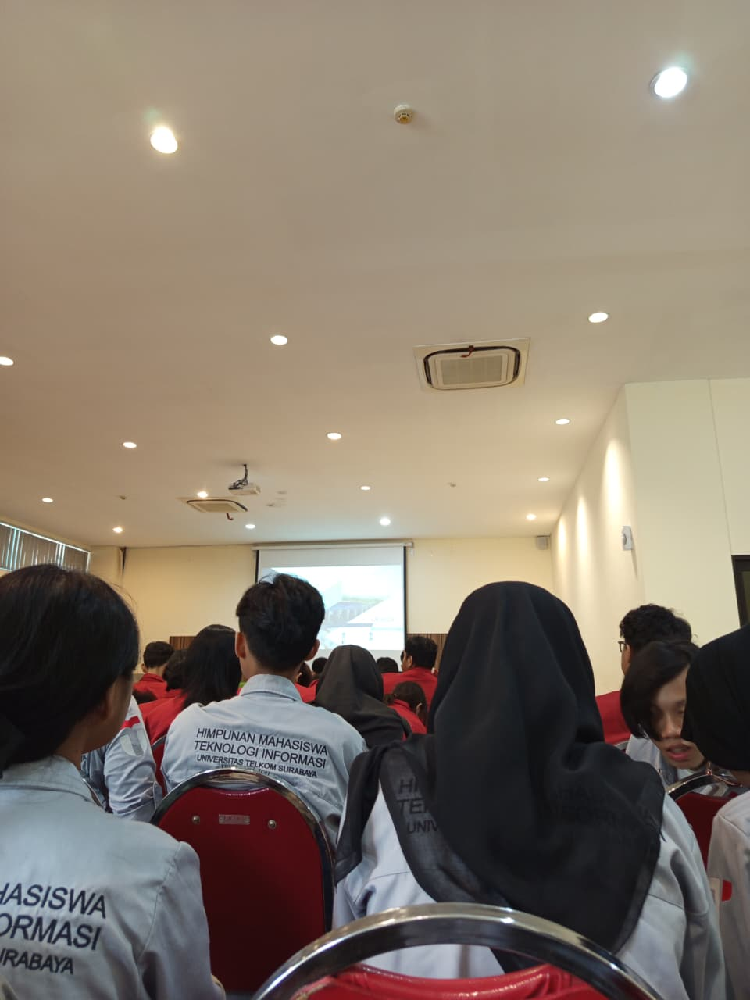
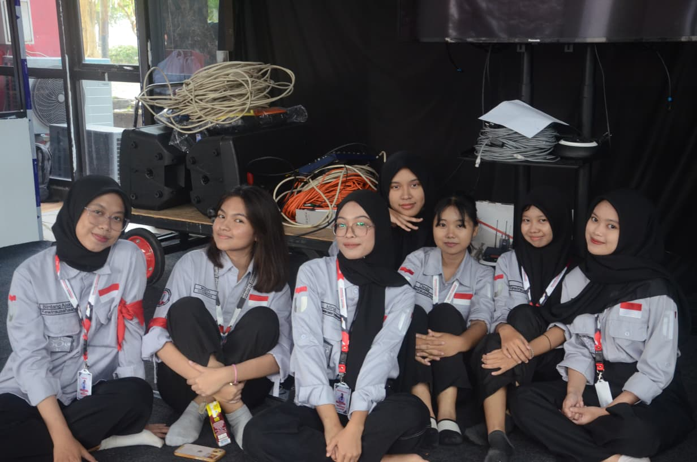
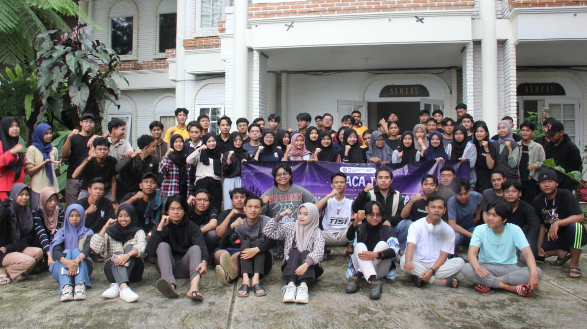
Volunteer Kids Diamond Creation
Involuntir — Surabaya
Juni 2025
- Ikut serta bersama 11 panitia volunteer lainnya, mendampingi anak-anak panti asuhan dalam aktivitas kreatif diamond painting.
Lihat foto
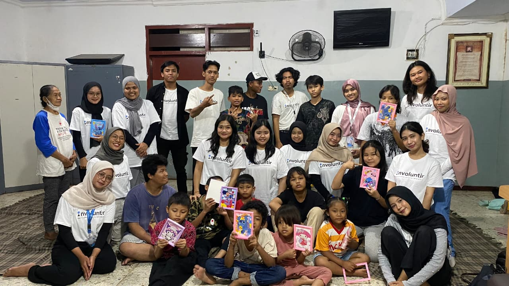
Anggota Divisi ATP
PKKMB Dewangkara Maetala 2023 — Surabaya
Mei – September 2023
- Mengelola administrasi surat perizinan serta pengadaan barang dan perlengkapan untuk seluruh divisi selama masa persiapan empat bulan hingga hari pelaksanaan.
Lihat foto
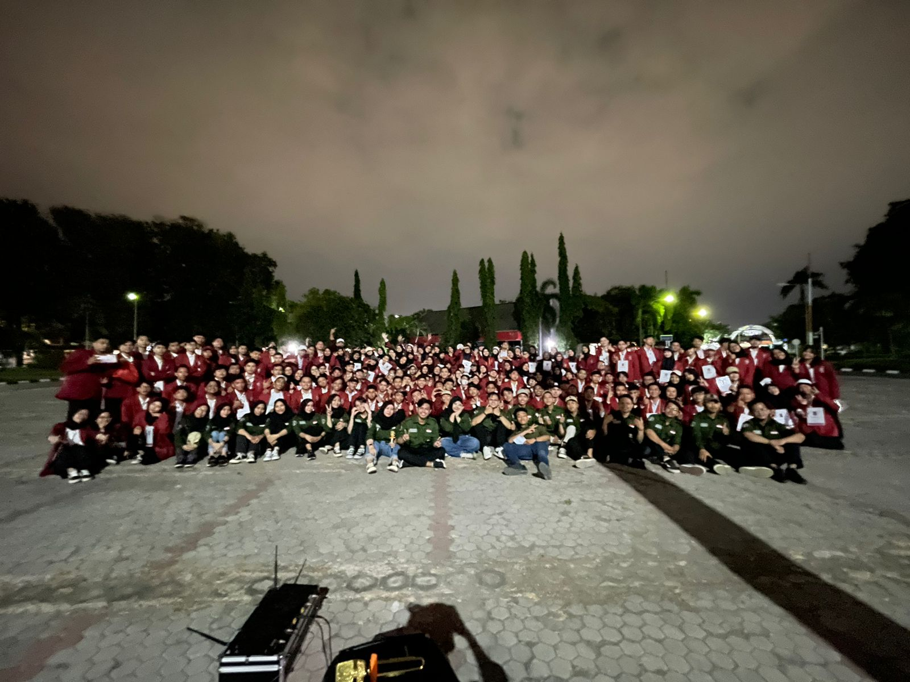
Alat kerja